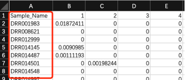
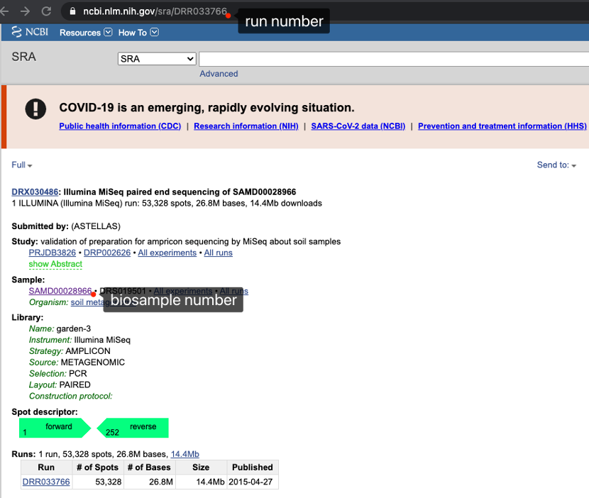
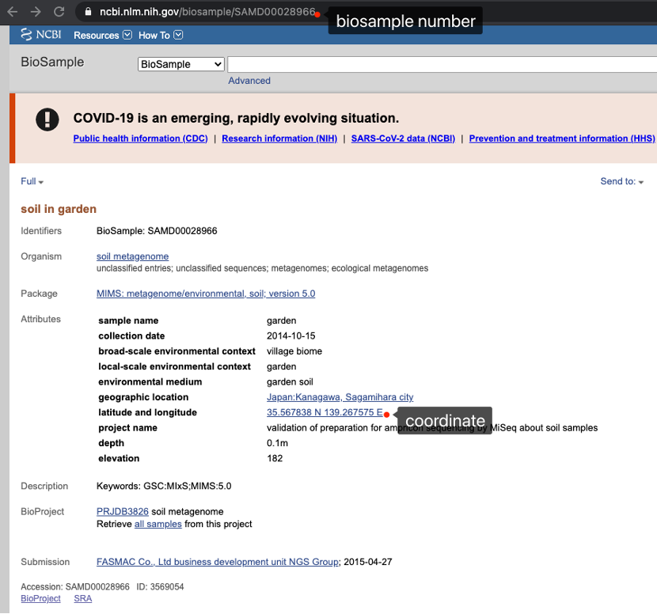
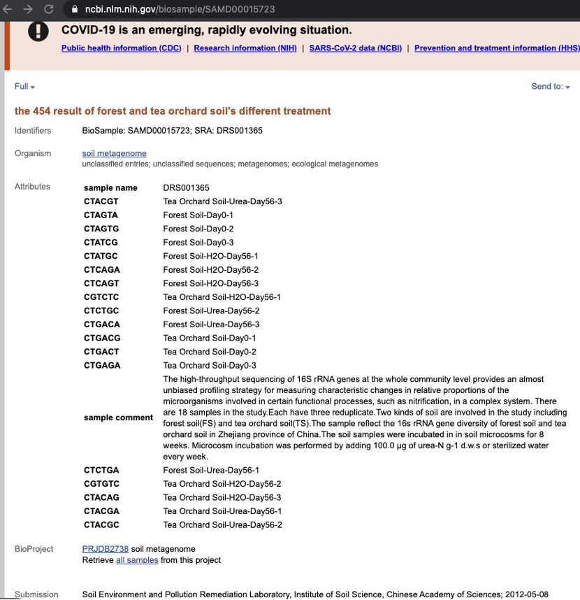
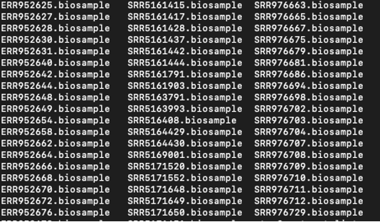
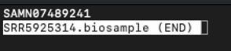
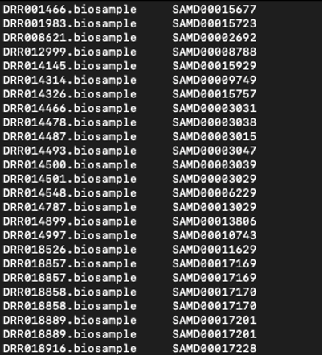
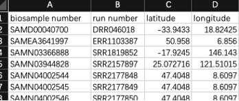
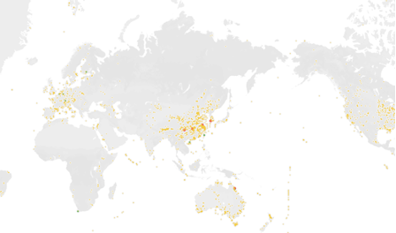

After obtaining the results from IMNGS, open any .tab file. The first column would be Sample_Name, which represents the run number of the SRA that aligned to the provided 16S rRNA sequences.
For example, this is an outcome from IMNGS.

Each run number could be searched in public database (e.g. NCBI). If we search the run DRR033766 in NCBI, we will enter a webpage like this.

You can see that the website address is in a fixed pattern:
https://www.ncbi.nlm.nih.gov/sra/ + run_number
And every run number has an according biosample number. If we enter the biosample webpage, luckily, we can see there’s a coordinate at 'the latitude and longitude' column:

However, sometimes we would find no coordinate reported in a sample (see below). Under such condition, I would leave these samples alone.

Alright, this is the overall logic to decide the geographic distribution of our microbes. At first we gather the number of all SRA samples containing our 16S rRNA sequences, and the locations of these samples represent the locations of the microbes. The next question is how to extract so many coordinates from thousands of webpages.
My answer would be web-crawling.
As is shown above, we can download all of the run pages. Make a list of command to download the pages:
wget https://www.ncbi.nlm.nih.gov/sra/DRR008621
wget https://www.ncbi.nlm.nih.gov/sra/DRR012999
wget https://www.ncbi.nlm.nih.gov/sra/DRR014145
wget https://www.ncbi.nlm.nih.gov/sra/DRR014487
wget https://www.ncbi.nlm.nih.gov/sra/DRR014501
Here I recommend to put all of the wget command into one file, and use ParaFly or sbatch to run the file. They provide a simple mechanism for running a predefined list of unix commands in parallel using multithreading, which would be much faster than running using singlethreading.
Then we should obtain the biosample number within the webpage. Look at the source code of the page. The tags surrounding the biosample number would be like:
<a href="/biosample/SAMD00015929" title="Link to BioSample">SAMD00015929</a>
And this pair of tags are unique in the page, by which we could locate and extract the biosample number. You can edit an .pl script below using touch extract_biosample.pl, vim extract_biosample.pl, type i to enter the edit mode, and paste the text below:
#!/usr/bin/perl
open(file1,@ARGV[0]);
while (<file1>) {
if ($_ =~ m/Link\sto\sBioSample.*?>(.*?)</o) {
print $1,"\n";}
}
And then, execute the .pl script on the run webpage:
./extract_biosample.pl ../webpages/DRR014145 > DRR014145.biosample
We get a single biosample number in the .biosample file. Go through all the run webpages, we now get all the run_number.biosample files:

Check if the number was extracted by opening one of the files:

Next, we can merge the run number toward the file using:
for i in 'ls *.biosample'; do cat $i | sed 's/^/'$i'\t/' >> test.file; done
Open the test.file to check if the file names are added before the sample numbers. Not every run or biosample has the webpage in NCBI, but the command above have already screened out the unavailable ones. And you can check to make sure the biosample number is accordance with the run number.

Now we have the list of biosample number. Just like the previous step, download all the webpages of the biosamples and then extract the coordinates between the tags. I still recommend using ParaFly to download these webpages:
wget https://www.ncbi.nlm.nih.gov/biosample/SAMD00028966
wget https://www.ncbi.nlm.nih.gov/biosample/SAMD00013029
…
Pick different biosample web webpages to check out. You might find different situations:
We have nothing to do with the first situation. For the rest of the situations, we can use the following .pl script to extract the coordinates:
#!/usr/bin/perl
open(file1,@ARGV[0]);
while (<file1>) {
if ($_ =~ m/www.google.com\/maps\/place\/.*?>(.*?)</o) {
print $1,"\n";}
}
#!/usr/bin/perl
open(file1,@ARGV[0]);
while (<file1>) {
if ($_ =~ m/latitude.*?td>(.*?)<.*?longitude.*?td>(.*?)</o) {
print $1,$2,"\n";}
}
#!/usr/bin/perl
open(file1,@ARGV[0]);
while (<file1>) {
if ($_ =~ m/latitude and longitude.*?td>(.*?)</o) {
print $1,"\n";}
}
And then, execute the .pl script on the biosample webpage:
./extract_coordinates.pl ../webpages/SAMD00013029 > SAMD00013029.coordinates
Remember, try to resolve each of the situation one by one, and pick out the null file (might not suit the situation) before doing the next. After extracting all of the coordinates (clean all of the null files before the next step), you can merge the biosample number toward the file using:
for i in 'ls *.coordinates'; do cat $i | sed 's/^/'$i'\t/' >> coordinates.file; done
And finally you have a file with biosample number and its coordinates. However, the coordinates are not in the same form and sometime even mistakenly wrote. My method was to output the coordinates.file into excel and correct them manually into unified form like:

The final step is to plot the coordinates on a map. I used the software tableau to do so, it’s quite convenient and user friendly, you can apply for a 14-day trial for free.
